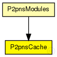
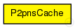

This documentation is released under the Creative Commons license
This documentation is released under the Creative Commons licenseThe name cache module of the P2PNS implementation
Author: Ingmar Baumgart
The following diagram shows usage relationships between types. Unresolved types are missing from the diagram. Click here to see the full picture.
The following diagram shows inheritance relationships for this type. Unresolved types are missing from the diagram. Click here to see the full picture.
If a module type shows up more than once, that means it has been defined in more than one NED file.
| P2pnsModules (compound module) |
Implementation of "P2PNS: A distributed name service for P2PSIP" |
| Name | Value | Description |
|---|---|---|
| display | i=block/table |
// // The name cache module of the P2PNS implementation // // @author Ingmar Baumgart // simple P2pnsCache { parameters: @display("i=block/table"); }
This documentation is released under the Creative Commons license